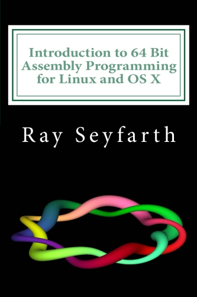
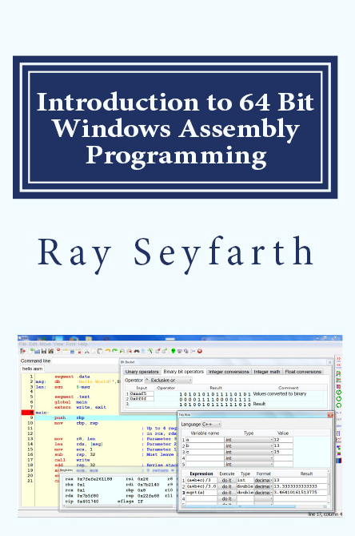

Tutorials on Google+
This spring I will conduct Assembly Language tutorials using a Google+ Hangout. My plan is to have 1 hour tutorials on Mondays at 1:00 PM Central Time until mid May. If you wish to participate my Google account is "ray.seyfarth". With a Google account you can start by adding me to one of your circles. It could be interesting and it should be useful.
Introduction to 64 Bit Assembly Programming for Linux and OS X
The era of 64 bit computing is now. You know your computer will run faster with more RAM than 4 GB and a 32 bit computer is limited to 4 GB. With a 64 bit CPU and a 64 bit operating system you can have more RAM - more RAM for programs and more RAM for buffer cache. Your computer will run faster.
In addition to allowing your computer to use more RAM, running your PC in 64 bit mode will enable the use of more registers. A PC running in 32 bit mode has 8 registers - with 2 of them tied up in the stack pointer and frame pointer. In 64 bit mode the CPU has 8 additional general purpose registers and 8 additional floating point registers. These additional registers allow compilers to perform better optimization and all function parameters to be placed in registers rather than being pushed on the stack. These new registers also help your computer run faster.
"Introduction to 64 Bit Assembly Language Programming for Linux and OS X" teaches only 64 bit programming. This simplifies the subject making it easier to learn.
This is the third edition of the assembly book. The primary changes to the book are the inclusion of OS X support for assmebly programming and the discussion of the Qt version of ebe. Examples in the book are frequently illustrated using windows from ebe. Ebe is an acronym for "Easy Beginner Environment" and targets teaching assembly language. It is easy to use and makes learning assembly language easier.
Introduction to 64 Bit Windows Assembly Programming
Learn 64 bit assembly language using the Windows operating system. This is an adaptation of the Linux assembly book which covers the same basic topics. It is designed for people familiar with one higher level programming language. Ideally this language would be C or C++ since the book explains how to call assembly functions from C and vice versa.
The discussion is based on using the free IDE, ebe, which internally uses the GNU C and C++ compilers along with the yasm assembly to build programs. The differences between the Windows and Linux/OS X books are primarily the function call protocol. Windows uses 4 registers for parameters which Linux and OS X use more. The sequence of registers is different and there are a few other function call differences. In the interest of keeping the book accessible to programmers with about 1 year of experience, the choice was made to offer a separate book.
ebe - Integrated Development Environment

Ebe is an integrated development environment designed to make it easier to write and debug assembly language programs. To the right is an example of the source window in ebe with a short assembly program. The red background on the line number for line 13 indicates that there is a breakpoint on line 13. The light blue background on line 15 indicates that line 15 is the next instruction to execute while debugging.
Ebe supports programming in Assembly, C, C++ and Fortran. When you click green alien icon ebe runs the appropriate compiler or assembler and then starts running your program using the gdb debugger. You use the icons to the right of the alien to do the next instruction, step into a function, continue or stop debugging. You can view the registers in a register window and program variables in a data window. Ebe makes is easy for you to define variables based on labels in the code or addresses contained in registers.
The latest ebe includes growing support for different languages including Arabic, Chinese, French, Hindi, Portuguese, Russian, Spanish and Swedish. The Arabic, French, Hindi, Spanish and Swedish translations have been reviewed by people who speak those languages. The rest are from Google Translate and may be poor. Help is needed from around the world to improve the accessibility of ebe.